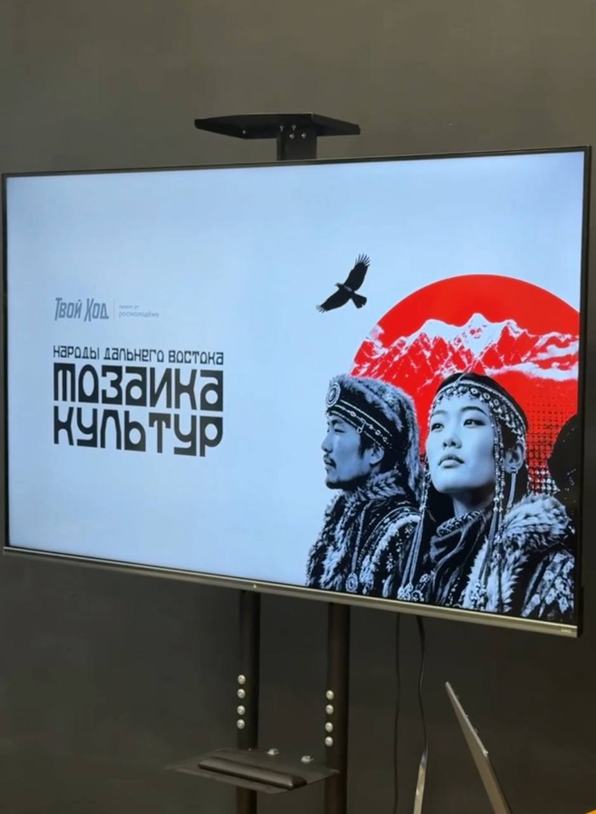
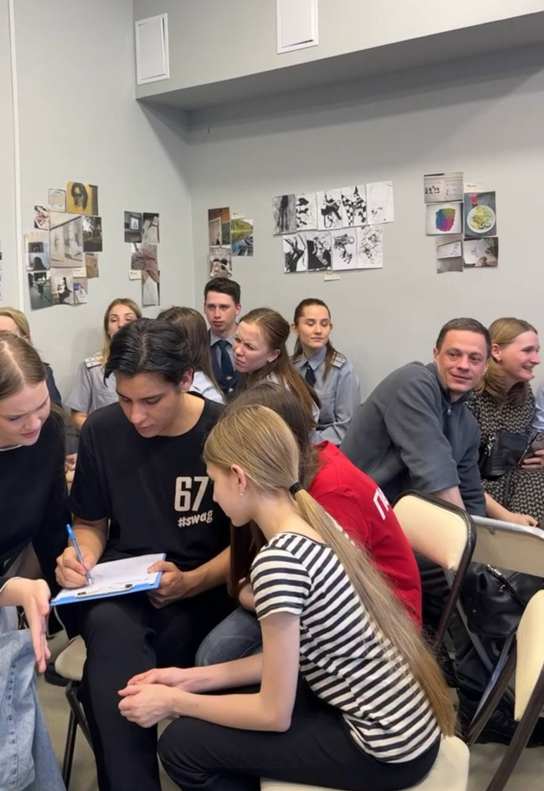
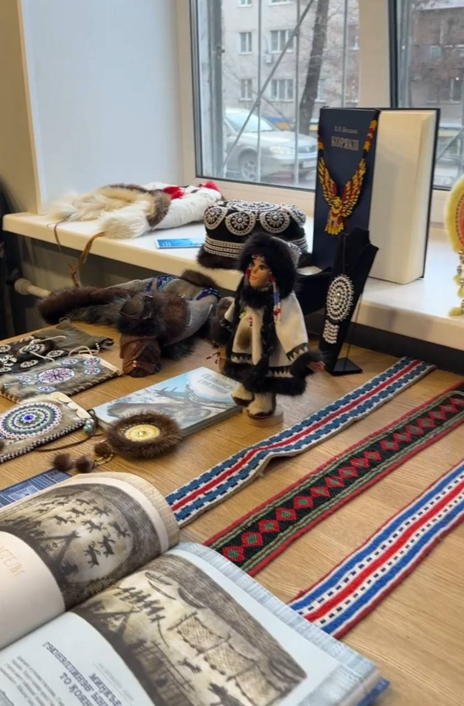
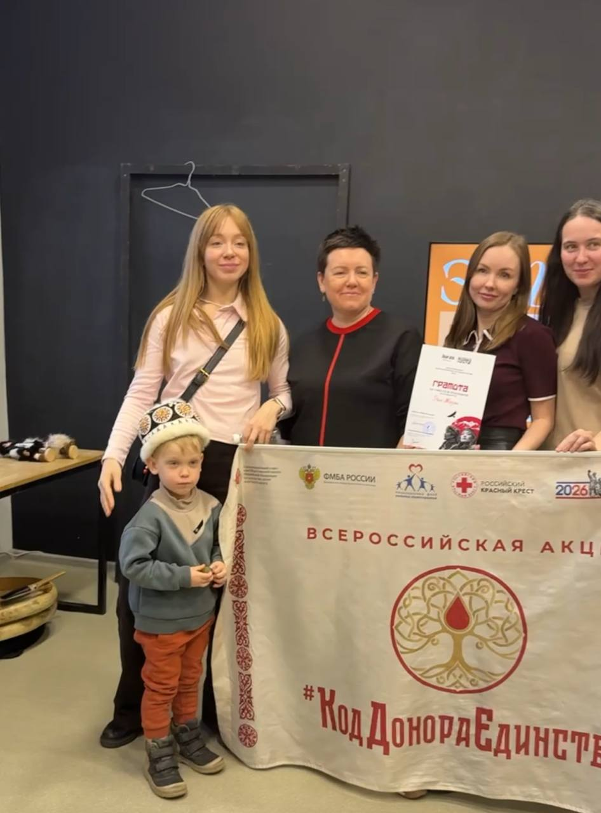

образовательный атлас · хабаровский край
Мозаика культур
Современный сайт о коренных народах Дальнего Востока: коротко, бережно и визуально чисто. После мероприятий здесь можно изучить культуру, язык, территории и живые традиции народов края.
миссия
Сохранять культуру живой.
Проект соединяет встречи, образовательные материалы и цифровой архив, чтобы молодежь могла изучать наследие коренных народов Хабаровского края ясно, уважительно и современно.
атлас
Народы Хабаровского края
Каталог знакомит с народами края через территорию, язык, традиции и современную культурную жизнь. Каждая карточка ведет на отдельную страницу с подробным материалом.
изучение
Выбери народ и собери первое представление.
Формат рассчитан на молодежь: быстро выбрать тему, увидеть ключевые факты и проверить себя. Материалы помогают продолжить знакомство после лекций, встреч и мастер-классов.
мероприятия
Мозаика культур в формате живой встречи.
29 апреля
Мозаика культур
Участники знакомились с культурой коренных народов через лекцию, мастер-класс, командные задания и квиз. Такой формат помогает не только услышать факты, но и обсудить их в группе.
Разговор о народах Дальнего Востока, территориях, языках и культурной памяти.
Практическое знакомство со звучанием традиции и ритмом совместной работы.
Изучение движений как телесного языка культуры и способа запоминания.
Командная игра по фактам, символам и культурным особенностям народов края.




обратная связь
Связаться с проектом
Вопросы по материалам, предложения для атласа и заявки на сотрудничество можно отправить через форму. После публикации сообщения будут собираться в Netlify Forms.
источники
Материалы сайта опираются на открытые справочные и нормативные источники.
Раздел помогает быстро перейти к документам, языковым справкам и обзорным материалам, на которых основаны страницы народов.